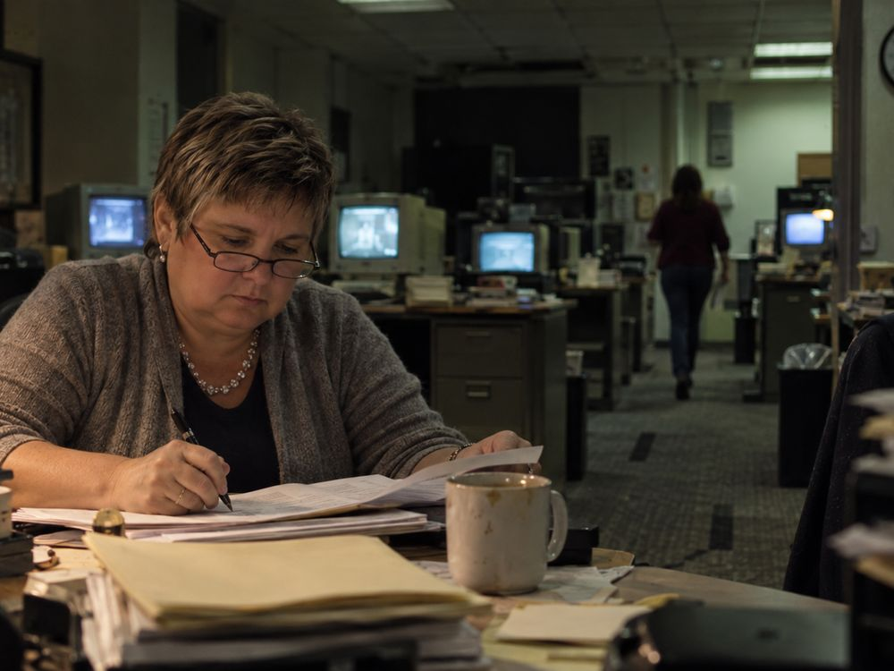
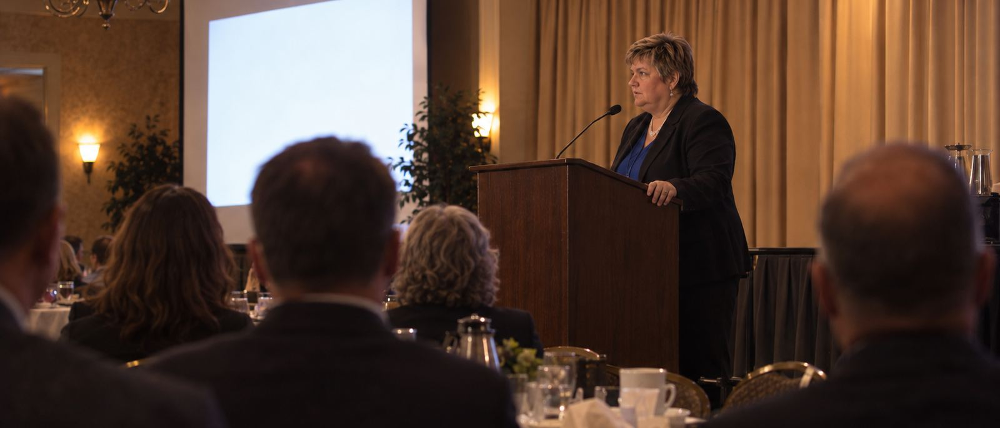
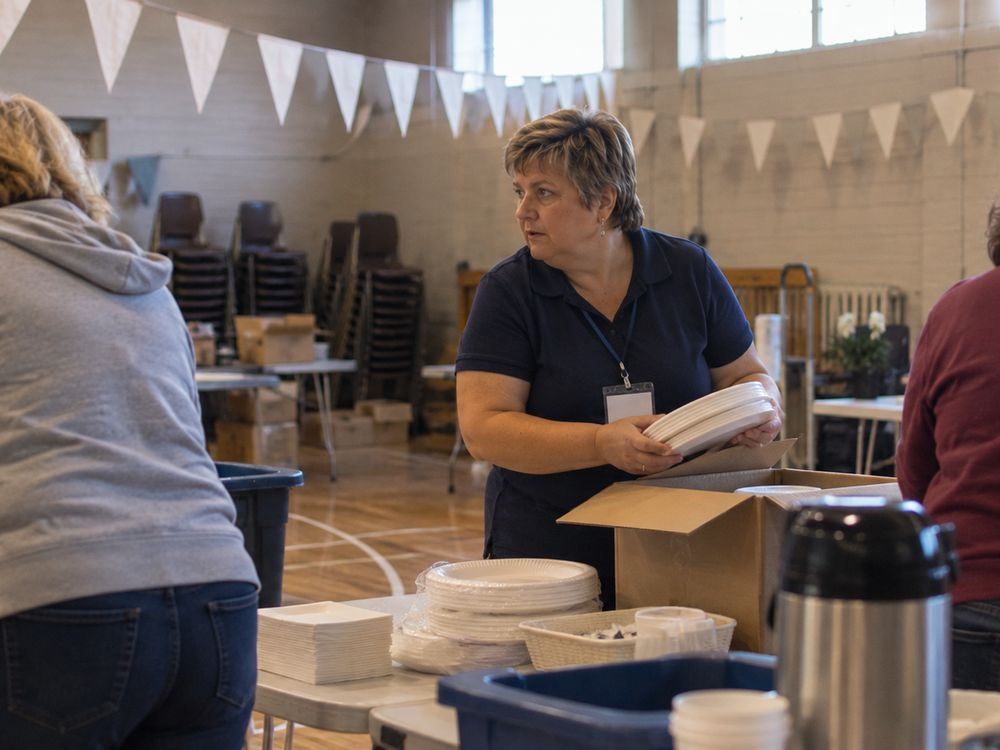

The turn
A news director decides which stories get air and which do not. For twenty-one years at WIFR that was her call. The release notes what was unusual about it: she was “recognized as one of the few female news directors in the mid-1980s, breaking significant barriers in a male-dominated industry.”
Her peers made her president of the Illinois Associated Press in 1991, and Illinois state coordinator for the Radio-TV News Directors Association for seven years. That is the profession electing her to speak for it.
Then she changed which side of the story she stood on. At Milestone, Inc. the job is fundraising and marketing, and what the money buys is specialised care for people with developmental disabilities. She is, the release says, particularly proud of this work, because it reaches people who cannot care for themselves.
She was born in Rockford. Every job listed on this page is in Rockford. She credits the place for the career.

The record
One of the few female news directors in the mid-1980s.
Committee 1989. President-elect 1990. President 1991.
Funds specialised care for individuals with developmental disabilities.
Dates and titles as stated in her Marquis Who’s Who release of 9 October 2025. Illinois State University additionally lists her as an assignment editor.
Recognition
2024
Inducted on 15 April 2024, one of twelve alumni that year. Confirmed by the university, not only by her own record.
2024
From the Governor of Illinois, the Illinois House of Representatives, the Illinois Senate and the Rockford City Council, marking the same year.
1986
Earned in the newsroom, three years into running it, and five years before the state association elected her its president.

Service
Two of these she has not stopped doing. The CrimeStoppers association began in 1992 and the Boys and Girls Club in 1997, and both are listed as continuing.

Away from the work: travelling, photography, dog training, and competing in dog sports.
Contact
No direct contact details appear in the public record, so rather than a form that quietly discards enquiries, here are the two institutions she is publicly attached to.
Career facts on this page are drawn from her Marquis Who’s Who release of 9 October 2025 and, where noted, from Illinois State University. Photographs are illustrative reconstructions of the settings she worked in, made with her approval. They are not documentary photographs of the events described.
© 2026 Arles Hendershott Love